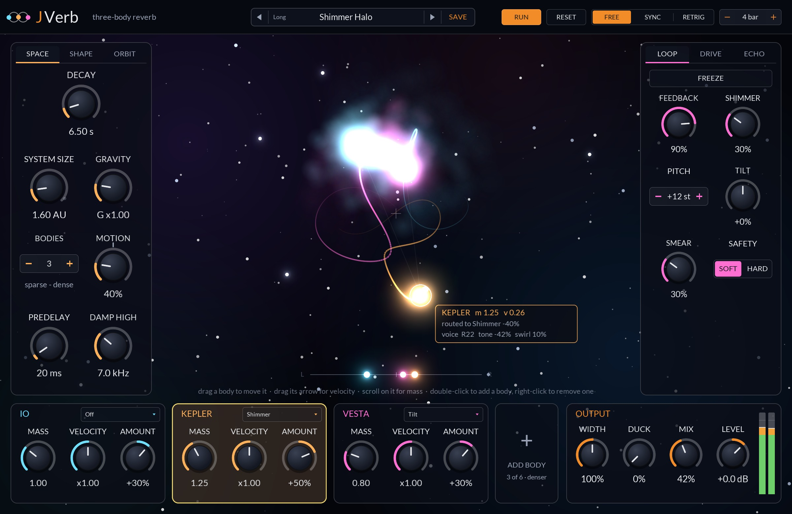
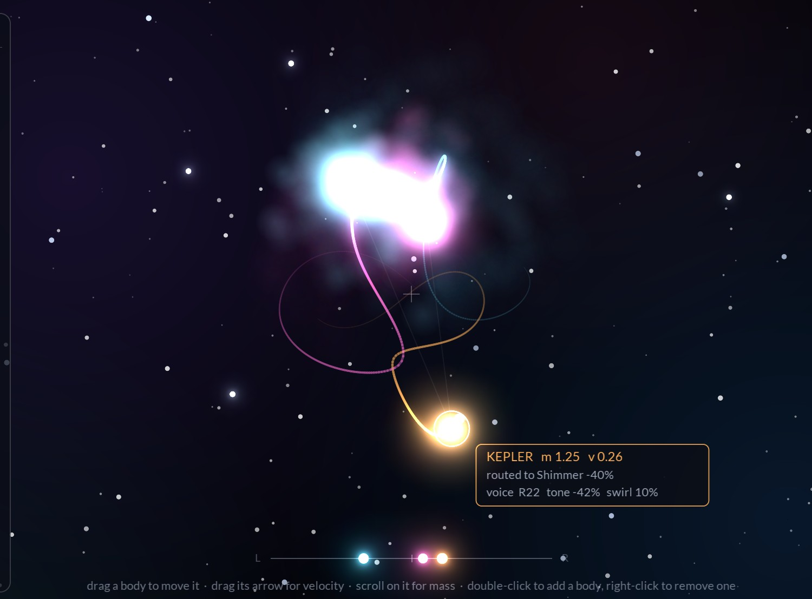
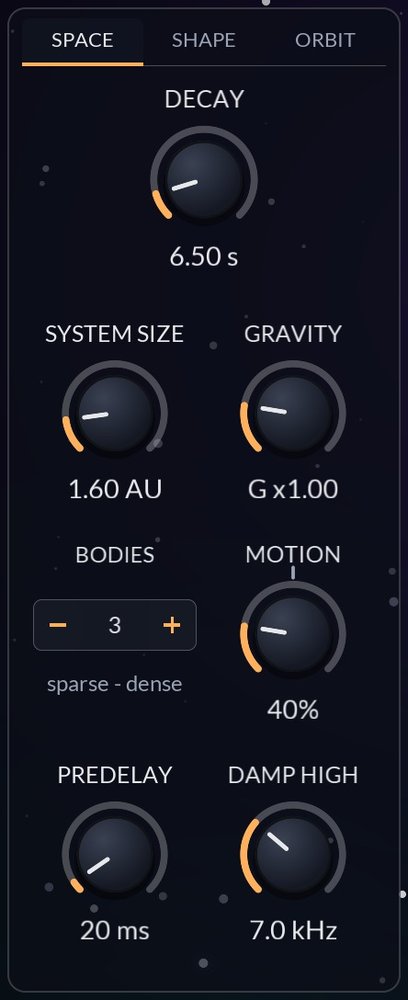
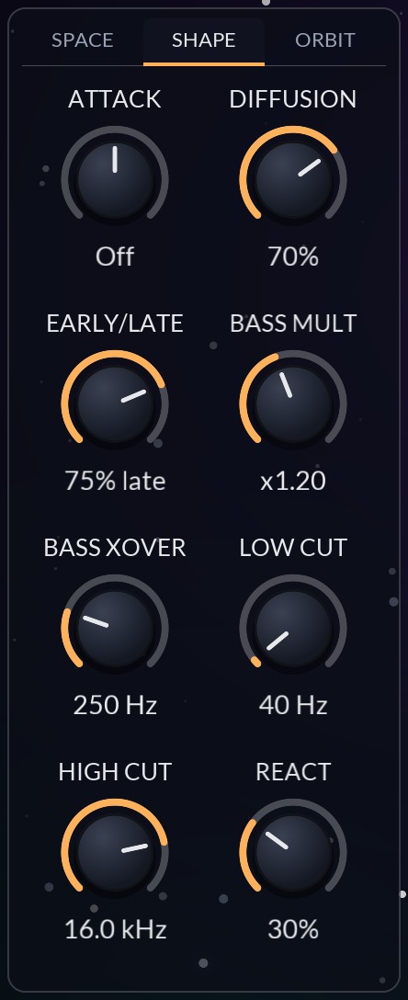
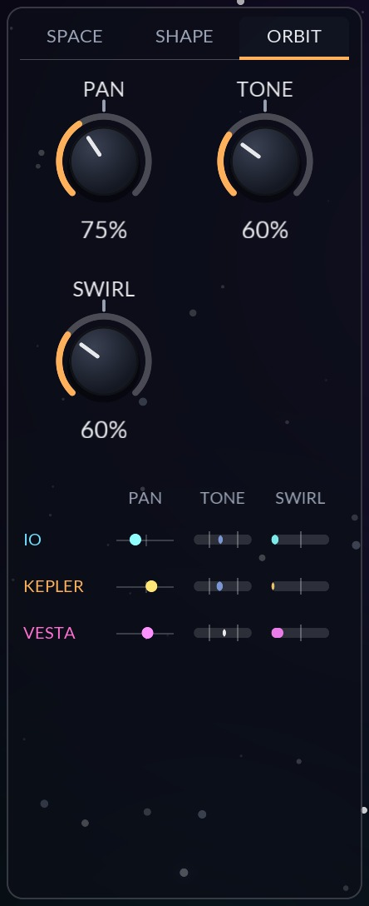
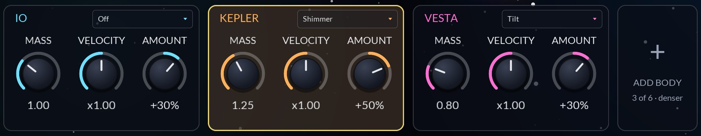
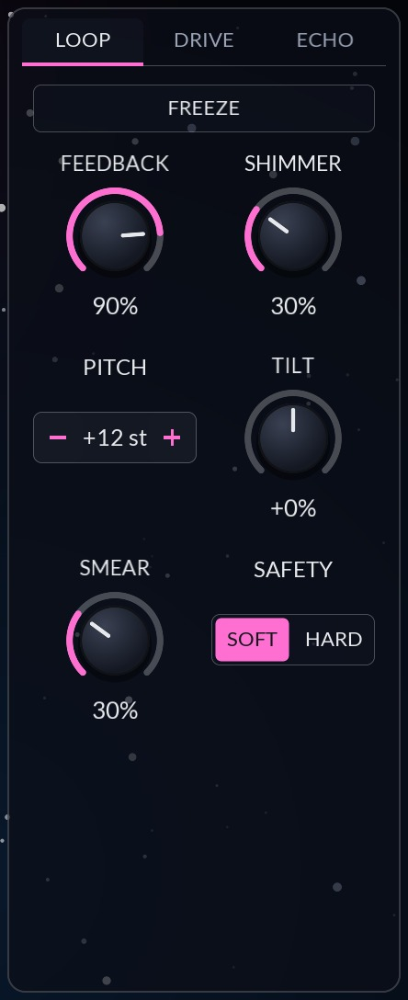
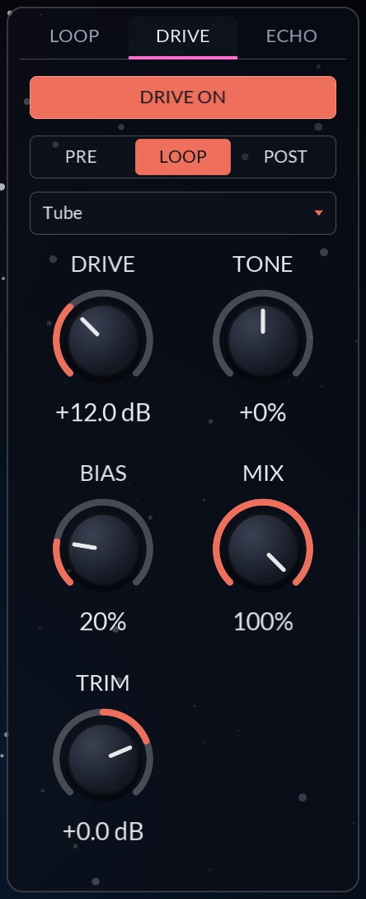
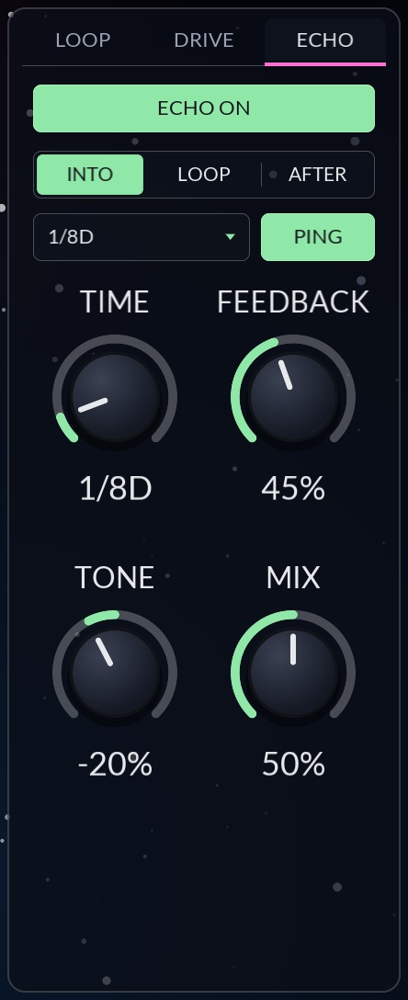
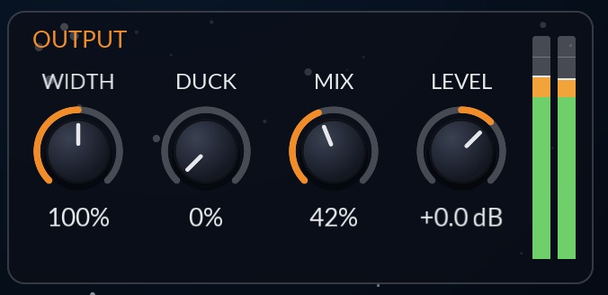

Chapters 2 and 3 get you installed and making sound in a few minutes. Chapter 4 tours the panel, and Chapter 5 explains how the sound is made, which is the quickest way to understand what every control does. Chapters 6 to 9 cover every control in the order they sit on the panel. The appendix lists every parameter with its exact range and default, plus specifications and troubleshooting.
Throughout the manual, control names are set in bold and panel labels as they appear on screen, such as DAMP HIGH. Tags beside a parameter mean:
A reverb whose tail is moved by a live gravity simulation. Two to six bodies orbit one another, and each one is a voice inside the sound.
Most reverbs that move do it with an LFO: a sine wave, a fixed rate, the same swirl every bar. JVerb moves its tail with something that never quite repeats. At its heart is a lush sixteen-line reverb tank. Those lines are shared out among a small system of bodies that pull on each other under gravity, and each body's share of the tail leaves through its own voice: its own band of the spectrum, its own place in the stereo field, its own tone and its own phaser. As the bodies swing, slingshot and drift, the tail swirls around the speakers with them.
Three bodies start on the famous figure-eight orbit and slowly fall into chaos. Add more, up to six, and the motion gets busier. Drag them, throw them, make one heavy and the others light, or let the music kick them around: transients in your input nudge the bodies, so what you play changes the orbit, and the orbit changes the sound.
Around the tank sits an outer loop with feedback, shimmer, smear and tilt; a five-flavour drive you can place before, inside or after the reverb; and a four-second echo that can feed the reverb, be fed by it, or ride inside its loop.
Motion, Orbit Pan, Orbit Tone and Orbit Swirl run to 200%, with a tick on the knob at 100%. Up to the tick they are tuned to stay musical: nothing bends pitch audibly and nothing rings. Past the tick is the extreme zone. See Chapter 12.
JVerb is a CLAP plug-in. It ships in the JClap bundle alongside the other JClap plug-ins.
| macOS | ~/Library/Audio/Plug-Ins/CLAP |
| Windows | C:\Program Files\Common Files\CLAP |
| Linux | ~/.clap |
The plug-ins are ad-hoc signed but not notarized, so macOS quarantines files downloaded through a web browser and some hosts (Bitwig among them) silently skip them. The simplest install is from Terminal, since files fetched with curl are not flagged:
curl -sL https://github.com/jeffmhopkins/Jclap/releases/latest/download/jclap-macOS.zip -o /tmp/jclap.zip && mkdir -p ~/Library/Audio/Plug-Ins/CLAP && ditto -x -k /tmp/jclap.zip ~/Library/Audio/Plug-Ins/CLAP
If you already downloaded with a browser, clear the flag once after copying:
xattr -dr com.apple.quarantine ~/Library/Audio/Plug-Ins/CLAP/*.clap
JVerb works either way. On an insert, use MIX in the Output section to set the balance of dry and wet (the default is 35%). On a send/return bus, set MIX to 100% so the return carries only the reverb, and set the amount with the send level instead. If you use DUCK on a send, remember that it listens to whatever arrives at JVerb's input, which is the send signal.
JVerb is a stereo effect. A mono input is used on both sides, and the reverb spreads it into stereo.
Five minutes from an empty insert slot to a moving, living tail.
Every control has a tooltip. Hover over anything on the panel for a one-line reminder of what it does.
The orbit view fills the middle. The reverb's controls sit around it in glass cards, one per part of the sound.
Every knob, switch and menu is a host parameter, so everything can be automated, and most knobs also accept CLAP parameter modulation from the host. Knobs work the same everywhere on the panel:
| Action | On a knob |
|---|---|
| Drag up / down | Change the value. A popup shows the value while you drag. |
| Shift + drag | Fine adjustment. |
| Scroll wheel | Step the value up or down. |
| Double-click | Reset to the default value. |
| Right-click | Menu with Reset to default and Enter value… to type an exact number. |
Each knob draws two arcs. The inner arc is where you set it. When a body or the host is modulating the parameter, a modulation ring shows the value actually in use, moving in real time. The four knobs with an extended range carry a small tick at 100%.
The panel is 1200 × 780 at 100%. Right-click any empty part of the orbit view and choose UI Size to scale it to 75%, 100%, 125%, 150% or 200%. The size you pick is remembered the next time the editor opens.
A tank of sixteen delay lines, a loop around it, and a small solar system that decides where each part of the tail is heard.
Sound enters at the top left, is shaped and diffused, rings in the tank, and leaves through the body voices to the output. The hexagons are slots: the drive sits in exactly one of its three slots, and the echo in one of its three. Only the slot that is selected is active.
The input first passes LOW CUT and HIGH CUT. Only the reverb hears these filters; the dry signal is untouched. If the drive is in its PRE slot it comes next, then the echo if its slot is INTO. PREDELAY holds the sound back by up to half a second before the space answers.
Eight early reflections are tapped off the predelay, between 7 and 67 ms after it (scaled by System Size), alternating left and right. They never enter the tank: they go straight to the EARLY/LATE balance at the output. Meanwhile the signal is smeared by six allpasses per side (DIFFUSION) and shaped by ATTACK, which can soften it into a slow swell or play it backwards in overlapping windows, before it enters the tank.
The tank is a feedback delay network of sixteen lines. At System Size 1 they run from 29 ms to 202 ms, evenly spread on a log scale so that none is a simple ratio of another. Each pass through a line goes through two allpasses, loses a little level (so the tail falls 60 dB in the DECAY time), has its bass adjusted by BASS MULT and its treble damped by DAMP HIGH, and is then mixed into every other line through a 16 × 16 Hadamard matrix. The result is a sound that thickens into a dense wash within about 150 ms.
Each line also drifts very slowly on its own, which blurs resonances the way a chorus would. MOTION sets how far: at 100% no line bends a pass by more than 4 cents, so the tail never sounds pitchy.
The sixteen lines are dealt out among the bodies in left/right pairs, so every body owns a spread of short and long lines on both sides. With three bodies, Io gets lines 1–2, 7–8 and 13–14; Kepler gets 3–4, 9–10 and 15–16; Vesta gets 5–6 and 11–12. Each body's lines are summed into its own stereo voice, and the voice is shaped by where the body is:
| Voice | Comes from | Controlled by |
|---|---|---|
| Band | The body's number: body 1 lowest. With n bodies the spectrum is cut into n bands. | ORBIT · PAN |
| Place | The body's left/right position on the stage. | ORBIT · PAN |
| Tone | The body's distance from the centre of mass: bright near the centre, dark out on the swing. | ORBIT · TONE |
| Swirl | The body's angle around the centre. A four-stage phaser is swept twice per lap. | ORBIT · SWIRL |
None of this bends pitch: the bodies never change a line's length. Because a body's tone also moves the damping in its own lines, a dark body's part of the tail dies darker as well as sounding darker.
Around the whole tank runs a second, slower loop. It takes the plain sum of all the lines, before the voices, shapes it, and feeds it back into the tank's input:
Because the loop is taken before the voices, nothing a voice does (a boost, a ringing phaser, a stereo flip) is ever fed back. That is what makes the voice controls safe to push to 200%.
FEEDBACK is scaled so that it means the same thing at any decay and size: below roughly 100% the tail still dies away, just longer and more coloured by the loop; past it, the loop grows until the safety stage holds it.
Besides its voice, each body produces a modulation signal: how fast it is moving compared with the others, plus how close its nearest neighbour is. A body cruising at the average speed sits near zero; a body slingshotting past another spikes high. Route that signal to one of nine parameters with the body's Target and Amount (Chapter 9).
The bodies obey Newtonian gravity: every body pulls on every other in proportion to its mass. GRAVITY scales the pull, so higher values give faster, tighter orbits with the same shapes. The simulation takes smaller steps during close passes so slingshots stay accurate, keeps the system centred, and gently catches any body flung too far out and turns it around. Simulation and audio run on the same 32-sample clock, so the same settings and input always give the same orbits and the same render, at any buffer size.
The stage in the middle of the panel is not just a display. It is an instrument: every body can be grabbed, thrown and weighed.

| Gesture | Where | What it does |
|---|---|---|
| Drag | On a body | Moves the body. Release it and it carries on from where you left it. |
| Drag the arrow | On the selected body | Sets the body's velocity: direction and speed. |
| Scroll | On a body | Changes its mass. Heavier bodies are drawn bigger. |
| Double-click | Empty space | Adds a body at that point, moving at circular speed around the others (up to six). |
| Right-click | On a body | Removes it. The bodies after it move down a place, settings and all. |
| Right-click | Empty space | The panel menu, with UI Size. |
| Click a card | Body cards | Selects that body; click again to deselect. |
Six bodies are available, each with a fixed name and colour. The first three are present by default.
| No. | Body | Default mass | Follows transients in |
|---|---|---|---|
| 1 | Io | 1.00 | Lows (below 250 Hz) |
| 2 | Kepler | 1.25 | Mids |
| 3 | Vesta | 0.80 | Highs (above 2.5 kHz) |
| 4 | Titan | 1.00 | Lows |
| 5 | Rhea | 1.00 | Mids |
| 6 | Luna | 1.00 | Highs |
Three bodies start on the figure-eight orbit, which is stable when the masses are equal. JVerb's default masses (1, 1.25, 0.8) break it up within a few laps into motion that never repeats. Any other number of bodies starts on a ring with slightly different radii, so the ring soon breaks up too.
Everything on the stage reflects what you hear:
Transients do more than draw gas. With REACT (on the SHAPE page) above zero, each hit also kicks the bodies that follow its band, so a busy drum part keeps reshaping the orbit, and through it the sound. Set React to 0% for orbits that only follow gravity.
The header holds the preset browser and the controls that run the orbits.
Loading a preset sets every parameter, so nothing carries over from the previous sound (a body's routing, for example). The host sees the change as an ordinary edit, so it can be undone. The orbits then restart from the preset's masses and velocities.
User presets are small text files with the extension .jvpreset, one line per parameter, so they sound the same even if a later version changes a default. They live in:
| macOS | ~/Library/Application Support/JVerb/Presets |
| Windows | %APPDATA%\JVerb\Presets |
| Linux | $XDG_CONFIG_HOME/JVerb/Presets (or ~/.config/JVerb/Presets) |
Copy files into this folder to share presets between machines; they appear the next time the menu opens. The name of the last preset loaded or saved is stored with your project.
| Control | Range | Default | What it does |
|---|---|---|---|
| RUN | On / Off | On | Off stops the orbits where they are. The tail keeps sounding, with every voice held where its body stopped. |
| RESET | button | – | Puts the bodies back where they start, with their set masses and velocities. |
| Clock | Free, Sync, Retrig | Free | How the orbits are clocked (below). |
| Sync Bars | 1 to 16 bars | 4 | Bars per lap of the start orbit when the clock is SYNC. |
Restarts are deterministic: the same settings and the same input give the same orbits, and the same render, every time. That makes SYNC and RETRIG the modes to use when you bounce or freeze tracks.
Three pages on the left of the panel: SPACE sets the room, SHAPE its character, ORBIT how much the bodies move their voices.

| Control | Range | Default | What it does |
|---|---|---|---|
| DECAY | 0.2 – 60 s | 4.00 s | How long the tail lasts: the time for the mids to fall 60 dB (RT60). MODTARGET |
| SYSTEM SIZE | 0.25 – 10 AU | 1.00 AU | Scales every line in the tank, the early reflections, and the swell and reverse windows. At 10 AU the longest line is 2 s. Also sets how big the stage draws the system. MOD |
| GRAVITY | G ×0.25 – ×4 | ×1.00 | How hard the bodies pull. Higher runs the orbits faster and tighter with the same shapes. MOD |
| BODIES | 2 – 6 | 3 | How many bodies, and so how many voices and bands. Fewer is sparse, more is dense. |
| MOTION | 0 – 200% | 40% | How far the tank's lines drift: a chorus-like blur up to 80%, warble beyond. MOD |
| PREDELAY | 0 – 500 ms | 20 ms | Delay before the space answers. MOD |
| DAMP HIGH | 1 – 20 kHz | 7.0 kHz | Highs above this die faster on every pass, so the tail darkens as it rings. MODTARGET |
Decay is always the RT60 you set, whatever the size. A small system with a long decay gives a dense, metallic ring; a big system with a short decay sounds like a large space heard briefly, with more audible early structure. Sizes above about 4 AU start to sound grainy and echo-like by design.

| Control | Range | Default | What it does |
|---|---|---|---|
| ATTACK | Reverse 100% – Swell 100% | Off | Right of centre the tail swells in through three long allpasses; left of centre it plays the input backwards in overlapping windows (80 to 580 ms). MOD |
| DIFFUSION | 0 – 100% | 70% | How much the input is smeared before the tank, and how dense the tank's own allpasses are. At 0% a click goes in as a click and the bare tank rings metallic; at 100% as a cloud. MODTARGET |
| EARLY/LATE | 0 – 100% late | 75% late | Equal-power balance of early reflections and tail. MODTARGET |
| BASS MULT | ×0.25 – ×2.5 | ×1.20 | Bass decay time relative to Decay. MOD |
| BASS XOVER | 80 – 800 Hz | 250 Hz | Where Bass Mult takes over. Not on the panel, since it barely changes the sound; automation and presets only. MOD |
| LOW CUT | 20 Hz – 1 kHz | 40 Hz | High-pass on the reverb's input. The dry signal is untouched. MOD |
| HIGH CUT | 1 – 20 kHz | 16.0 kHz | Low-pass on the reverb's input. MOD |
| REACT | 0 – 100% | 30% | How hard transients in the input kick the bodies. MOD |
ATTACK is a bipolar knob. Turned right, transients soften into a slow bloom; the swell's allpasses grow with System Size. Turned left, the diffused signal is played backwards in two overlapping windows that grow from 80 ms to 580 ms as you turn, giving the classic reverse-reverb suck-in on every note. Both crossfade in gradually, so small settings just take the edge off.
A three-band analyser (split at 250 Hz and 2.5 kHz) watches the dry input for sudden jumps. Each transient kicks the bodies following its band, in proportion to React and how hard it hit. Kicks also scale with Gravity, so they feel the same at any orbit speed.

| Control | Range | Default | What it does |
|---|---|---|---|
| PAN | 0 – 200% | 75% | Narrows each voice to its own band and moves it from a wide spread to where its body is, left to right. Past 100% voices are thrown to the edges and their stereo turns inside out. MOD |
| TONE | 0 – 200% | 60% | A voice darkens as its body swings out and brightens near the centre. Also moves the damping in that body's lines. MOD |
| SWIRL | 0 – 200% | 60% | How deep each voice's four-stage phaser goes, swept twice per lap by its orbit. Past 100% the phasers feed back until they ring, and take over more of each voice. MOD |
Below the knobs, a row per body shows its voice live: where it sits from left to right, its tone (dark to bright), and how hard it is swirling. Each meter draws the same 0 to 200% scale as the knobs, with a tick at 100%.
Each body's tone depends on its distance from the centre of mass, scaled by TONE. Near the centre a voice is bright, out on the swing it is dark, and at about 0.9 units it is neutral.
| Body's tone | Above 2.5 kHz | Level | Damping in its lines |
|---|---|---|---|
| Dark (–1) | –12 dB | –3 dB | an octave lower |
| Bright (+1) | +4 dB | +3 dB | an octave higher |
| Dark, past 100% (–2) | –24 dB | –3 dB | three octaves lower |
| Bright, past 100% (+2) | +14 dB | +3 dB | three octaves higher |
Mass and velocity shape this too: a heavy body sits near the centre and stays bright, while its light partners swing wide and go dark and wide.
With Pan, Tone and Swirl all at 0%, every voice passes its lines straight through, and JVerb behaves like a conventional, very smooth stereo reverb.
Each body has a card along the bottom of the panel: two knobs that change its orbit, and a routing that lets it drive the sound.

| Control | Range | Default | What it does |
|---|---|---|---|
| MASS | 0.10 – 3.00 | 1.00, 1.25, 0.80, then 1.00 | The body's gravity on the others, and how big it is drawn. A heavy body sits near the centre; light ones swing wide around it. MOD |
| VELOCITY | ×0.50 – ×1.50 | ×1.00 | Scales the body's start speed. Turned while running, it scales the body's current speed by as much. Slow bodies fall inward; fast ones fly wide. MOD |
| Target | menu | Off | Which parameter this body's modulation signal moves. |
| AMOUNT | –100% – +100% | +50% | How much, and in which direction. MOD |
Click ADD BODY to add the next body, up to six, or use the BODIES stepper on the SPACE page. A new body enters outside the others, moving at circular speed around them. Lowering the count removes the newest body.
Each body's signal combines two things: how fast it is moving compared with the average of all the bodies, and how close its nearest neighbour is. The result runs from –1 to +1 and is smoothed over about 60 ms. A body slingshotting past another spikes high; a body crawling at the far end of a long orbit goes negative. The selected body's readout shows the live value of its routing.
Bodies start routed to Off, so nothing moves the sound that the panel doesn't show. When a body is routed, its target knob's modulation ring moves with it. Several bodies on the same target add up, and each result is kept within its parameter's range. Host modulation is added first, then the bodies' offset.
| Target | At full signal × 100% Amount | Target | At full signal × 100% Amount |
|---|---|---|---|
| Decay | Decay ×5.7 (÷5.7 at –1) | Shimmer | +125 points |
| Damping | Damp High moves 3.75 octaves | Feedback | +100 points |
| Diffusion | +125 points | Tilt | +200 points |
| Early/Late | +125 points | Width | +200 points |
| Drive | +45 dB | Off | No modulation |
Route a light, fast body to Damping with a negative Amount: each slingshot briefly darkens the tail, like a door swinging shut. Route a heavy, slow body to Width for a gentle breathing of the stereo image. Because the orbit never quite repeats, neither does the modulation.
Three pages on the right: the outer loop around the tank, the drive, and the echo.

| Control | Range | Default | What it does |
|---|---|---|---|
| FREEZE | On / Off | Off | Holds the tail forever, at its level and brightness, and lets nothing new in. |
| FEEDBACK | 0 – 150% | 0% | Sends the tank's output back to its input through the loop. Scaled to mean the same at any decay. MODTARGET |
| SHIMMER | 0 – 100% | 0% | How much of the loop is pitch shifted. Heard even with Feedback at 0. MODTARGET |
| PITCH | –24 – +24 st | +12 st | The shimmer interval, in semitones. |
| TILT | –100% – +100% | +0% | Darkens or brightens what goes round the loop: up to 6 dB each way around 700 Hz. Below 40% Feedback it also tilts the tail you hear, up to 9 dB each way. MODTARGET |
| SMEAR | 0 – 100% | 30% | Allpass blur in the loop. Not on the panel, since it barely changes the sound; automation and presets only. MOD |
| SAFETY | Soft, Hard | Soft | How the loop is kept from running away: a soft saturator or a hard clip. |
With Feedback below roughly 100% the tail still dies away, just longer and more coloured by the loop's shimmer, smear and tilt. Around 100% (somewhere between about 96% and 123%, depending on Decay and Size) the tail starts to sustain itself; past that, it grows until the SAFETY stage holds it, and FEEDBACK runs on to 150% so every Decay and Size has room to scream. Soft rounds the peaks off with a gentle saturation; Hard clips them for a harsher, more aggressive sustain.
Each pass through the loop is pitch shifted by PITCH, and Shimmer sets how much of the loop takes the shifted path. Because every pass is shifted again, the tail climbs (or descends) in steps: +12 gives the classic octave-up halo, –12 a deepening undertow, and a fifth (+7) a harmonic stack. Combine with Feedback for long, building shimmers.
FREEZE sets every line to sustain exactly, fades the damping out, slows the drift to a stop and closes both the input and the loop. Whatever is ringing at that moment holds indefinitely. Play over it with the dry signal, then release Freeze to let it decay naturally.

| Control | Range | Default | What it does |
|---|---|---|---|
| DRIVE ON | On / Off | Off | Switches the drive in. Fades over a few milliseconds rather than clicking. |
| Slot | PRE, LOOP, POST | PRE | PRE drives the input; LOOP drives every pass of the feedback loop; POST drives the reverb's output. |
| Type | menu | Tube | Tape, Tube, Fuzz, Fold or Crush (below). |
| DRIVE | 0 – +36 dB | +12 dB | Gain into the shaper. MODTARGET |
| TONE | –100% – +100% | +0% | Tilts what goes into the shaper around 900 Hz, and back after, so it changes what distorts, not the overall balance. Each step is even, up to 6 dB each way at the ends. MOD |
| BIAS | 0 – 100% | 20% | Asymmetry for even harmonics (Tube, Fuzz), fold depth (Fold), or hold length (Crush). MOD |
| MIX | 0 – 100% | 100% | Clean / driven blend. MOD |
| TRIM | –18 – +6 dB | 0 dB | Output trim. In the LOOP slot it can only cut. MOD |
| Type | Character | What Bias does |
|---|---|---|
| Tape | Smooth, symmetrical saturation. Warm and forgiving. | – |
| Tube | Asymmetric saturation with more even harmonics. | More asymmetry, more even harmonics. |
| Fuzz | A hard exponential knee. Buzzy and aggressive. | Offsets the knee. |
| Fold | A sine wavefolder that folds back on itself as it is driven. Metallic, synth-like. | Fold depth. |
| Crush | Bit reduction from 12 down to 3 bits as Drive rises. | Sample-and-hold: holds each sample for up to 15 samples. |
Tape, Tube, Fuzz and Fold run at 2× oversampling to keep aliasing down. Crush is deliberately not oversampled.
In the LOOP slot the drive works on every pass, so the tail gets dirtier the longer it rings. JVerb makes sure a quiet signal never comes out of the loop drive louder than it went in, so adding drive never makes the loop run away below 100% Feedback. That is also why TRIM can only cut in this slot. Past 100% Feedback the drive is let through more and more, until at 150% none of its gain is taken back: the loop then holds and screams instead of choking.

| Control | Range | Default | What it does |
|---|---|---|---|
| ECHO ON | On / Off | Off | Turns the echo's output up or down. The echo keeps running underneath, so switching on never replays old repeats. |
| Slot | INTO, LOOP, AFTER | INTO | Where the echo sits (below). |
| Sync | Free, 1/16 … 2 Bars | 1/8D | A note value at the host tempo, or Free to use TIME. |
| PING | On / Off | On | Ping-pong: the first repeat is on the left, then they alternate. |
| TIME | 10 – 4000 ms | 375 ms | The echo time when Sync is Free. Otherwise the knob shows the note value. MOD |
| FEEDBACK | 0 – 105% | 45% | Level of each repeat relative to the last. Past 100% the repeats saturate rather than run away. MOD |
| TONE | –100% – +100% | –20% | Darker or brighter with every repeat; past ±50% each step goes twice as far. MOD |
| MIX | 0 – 100% | 50% | Level of the repeats added at the slot. MOD |
Wherever it sits, the echo works as a send and return: it takes a copy of the signal at that point and adds only its repeats back, so the signal itself always passes straight through.
| Slot | Listens to | What you hear |
|---|---|---|
| INTO | The input, after the cuts and Drive PRE. | Every repeat is reverberated: the space hears each one as a new note, giving a rhythm of reverb swells. |
| LOOP | The outer loop, after shimmer, smear and tilt. | The tail comes back into the tank in long, spaced passes, one per echo time, even with Feedback at 0. With Feedback up, the two loops stack. |
| AFTER | The finished wet signal, after Drive POST. | Plain echoes of the reverb. They are part of the wet, so Width, Duck and Mix act on them, but they are never reverberated. |
Sync values run 1/16, 1/8T, 1/16D, 1/8, 1/4T, 1/8D, 1/4, 1/2T, 1/4D, 1/2, 1/2D, 1 Bar and 2 Bars; the bar values follow the host's time signature. At 120 BPM the default 1/8D is 375 ms. A synced time longer than 4 s, at slow tempos, is halved until it fits.
Changing the time bends the repeats already in the line, like a tape machine settling to a new speed, rather than clicking.
Tone works on the feedback only, so each later repeat is shaped more than the one before.
| Tone | Per pass, low | Per pass, high |
|---|---|---|
| –100% | 0 dB | –12 dB |
| –20% | 0 dB | –2.4 dB |
| 0% | 0 dB | 0 dB |
| +100% | –9 dB | +3 dB |
Split at 1.8 kHz. A 60 Hz high-pass in the feedback keeps lows from piling up.
Turning the drive on or off, changing its slot or type, or moving the echo to another slot all fade over a few milliseconds instead of switching in one sample. The echo keeps what is already in its lines when it moves, so you can change slots mid-performance.
The last stage: stereo width, ducking, the dry/wet blend and the final level.

| Control | Range | Default | What it does |
|---|---|---|---|
| WIDTH | 0 – 200% | 100% | Stereo width of the wet signal: 0% mono, 100% as is, 200% doubled side. MODTARGET |
| DUCK | 0 – 100% | 0% | Turns the reverb down by up to this much while the input plays (5 ms attack, 300 ms release), so it blooms in the gaps. MOD |
| MIX | 0 – 100% | 35% | Dry/wet balance. Use 100% on a send. MOD |
| LEVEL | –24 – +12 dB | +0.0 dB | Output gain, on dry and wet together. MOD |
The meters show the peak level of each output channel. With high Feedback, Shimmer or Drive the wet level can rise well above the input: keep an eye on them, and use LEVEL or the loop's SAFETY mode to tame it.
JVerb also reports its tail length to the host, worked out from the current Decay, Predelay, Feedback and echo settings, so hosts that stop processing silent tracks let the reverb ring out fully. With Freeze on, Feedback at 95% or more, or the echo in its LOOP slot, the tail is reported as infinite.
Four knobs go to 200%. Past the tick at 100% is where the weird stuff lives.
Up to the tick the four knobs are tuned to stay lovely: nothing bends pitch audibly and nothing rings.
Past the tick they keep going, to twice their normal range. The ORBIT page's voice list draws the same 0 to 200% scale with the same tick, so you can see which voices are in the extreme zone.
| Knob | 0 – 100% | 100 – 200% |
|---|---|---|
| MOTION | The lines drift up to 4 cents a pass. A chorus-like blur, never pitchy, up to 80%; from there a warble comes in, about 30 cents a pass by 100%. | The warble grows to as much as 150 cents a pass and runs up to four times faster. With Feedback high the tail warbles and groans. |
| ORBIT PAN | Voices narrow to their bands and move from a wide spread to where their bodies are. | Voices are thrown further out (at 200%, six times as far), so most pin to the edges, and each voice's stereo turns inside out. |
| ORBIT TONE | Up to –12 / +4 dB above 2.5 kHz, ±3 dB of level, damping ±1 octave. | Up to –24 / +14 dB above 2.5 kHz and damping ±3 octaves, and the bodies turn up to three times as sensitive to their distance, so the swing between bodies gets hard. |
| ORBIT SWIRL | Phaser depth up to its full mix; two sweeps per lap. | The phasers feed back on themselves until they ring and take over the whole voice, the sweep widens and goes round up to eight times per lap, and the tank's own allpasses swirl twice as hard. |
Only Motion acts inside the tank. Because the outer loop is taken before the voices, nothing Pan, Tone or Swirl does is ever fed back, so even at 200% they cannot make the reverb run away. The ringing of an extreme Swirl is level-compensated so its loudest resonance stays at unity.
Three other parameters also go past unity: FEEDBACK to 150% (the tail grows into the safety stage), echo FEEDBACK to 105% (repeats saturate), and WIDTH to 200%.
Seventy starting points: the classic rooms, plates and halls first, then the echo, shimmer, orbits and drive, then washes that ring for most of a minute and the extremes.
Starting points for common jobs and uncommon sounds. Begin from Init unless a preset is named, then change only what is listed.
A bright, dense tail that ducks under the singer and blooms between phrases.
The kit kicks the bodies around; one body darkens the room on every slingshot.
Each dotted-eighth repeat swells into its own reverb.
A climbing, angelic shimmer for pads and guitars.
The tail returns once a bar, a little dirtier each time.
Catch a chord in the tail and hold it while you play over the top.
The orbit repeats every two bars and lines up with the song on every playback.
Into the extreme zone: a warbling, groaning tail that turns inside out.
Every parameter JVerb exposes to the host, in host order. Everything is automatable.
| Format | CLAP 1.2 audio effect. Features: audio-effect, reverb, stereo. |
| Channels | Stereo in, stereo out. A mono input is used on both sides. |
| Platforms | macOS universal (10.15+ Intel, 11+ Apple Silicon), Windows (64-bit), Linux (64-bit). |
| Latency | None reported to the host. |
| Tail | Reported to the host from the current settings, so reverb tails are never cut off. |
| Reverb tank | 16-line feedback delay network, two allpasses per line, 16 × 16 Hadamard mix. Lines 29–202 ms at Size 1, up to 2.02 s at Size 10. |
| Decay | 0.2 to 60 s RT60, with separate bass multiplier and crossover. |
| Early reflections | 8 taps, 7 to 67 ms × System Size (up to 4×). |
| Simulation | 2 to 6 bodies under mutual gravity, velocity Verlet with adaptive substeps. |
| Control rate | Every 32 samples; gains ramp across each block, so nothing zippers. Renders are identical at any buffer size. |
| Drive | 5 shapes, 2× oversampled (31-tap half-band filters), except Crush. |
| Echo | Stereo, 10 ms to 4 s, 13 tempo-synced values plus Free, ping-pong. |
| Parameters | All automatable; most accept CLAP parameter modulation. |
| State | Saved with the host project, including the preset name. Older JVerb states load, with any missing parameters at their defaults. |
| Panel | 1200 × 780 at 100%; 75%, 100%, 125%, 150% and 200%. |
| Threading | The audio thread never allocates, locks or waits on the panel after activation. |
| Symptom | What to check |
|---|---|
| JVerb doesn't appear in my host (macOS) | The download is probably quarantined. See the warning in Chapter 2, then rescan plug-ins. |
| The tail never stops | Check FREEZE, and whether FEEDBACK is near or above 100%. A body routed to Feedback or Decay can also push it over. Echo Feedback above 100% sustains the repeats. |
| The tail sounds out of tune or seasick | MOTION is past 80%, or SHIMMER is up with an interval you didn't intend. |
| A whistling or ringing tone | ORBIT SWIRL past 100% makes the phasers ring. A small System Size with a long Decay can also sound metallic. |
| The reverb jumps around the stereo field too much | Lower ORBIT PAN, reduce REACT, or lower GRAVITY for slower motion. |
| SYNC doesn't line up with the song | The orbits realign when the transport starts, loops or jumps. Start playback from a bar line, and check the host sends tempo and time signature. |
| The output went silent for a moment | If a sample ever becomes invalid, JVerb outputs silence and restarts its tank (at most once per block) rather than passing a burst of noise. Usually an invalid sample came in from upstream. |
| My user presets are missing | Check the preset folder for your OS (Chapter 7). Files must end in .jvpreset. |